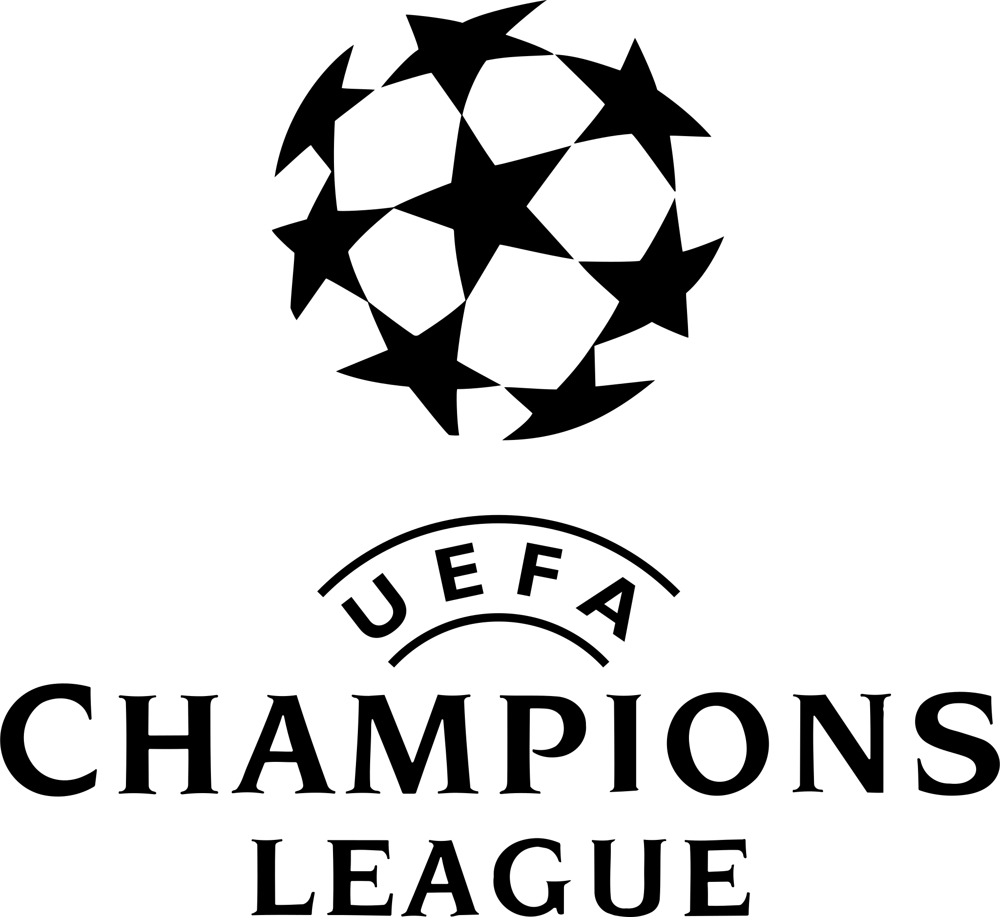

CHAMPIONS LEAGUE
A Liga dos Campeões da UEFA é uma competição anual de clubes de futebol a nível continental, organizada pela União das Associações Europeias de Futebol e disputada por clubes europeus. Apos o final do campeonato um site de esporte decide analizar qual time obteve melhor aproveitamento nas fases eliminatorias.
